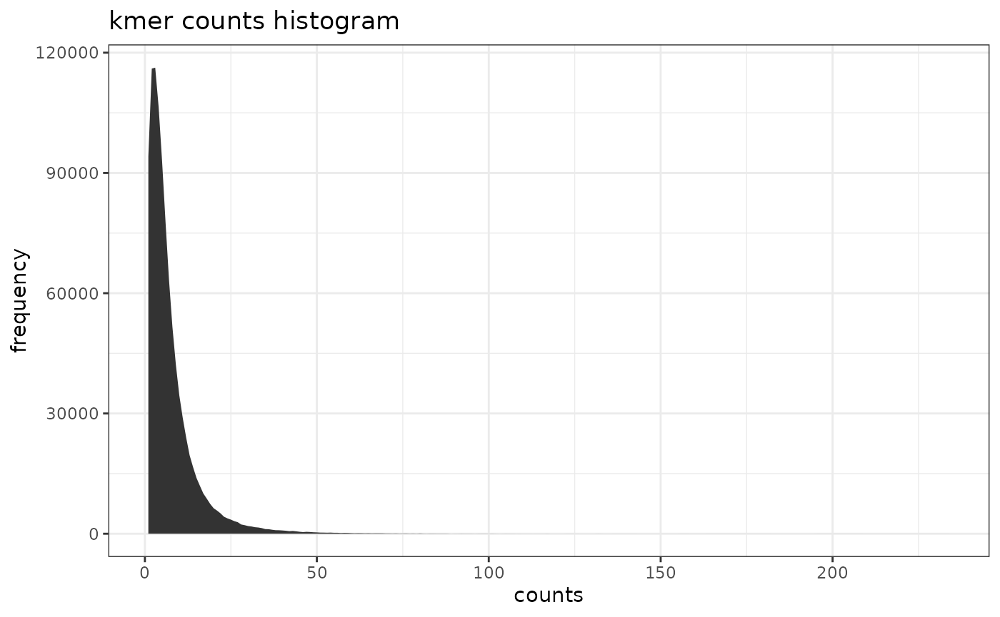
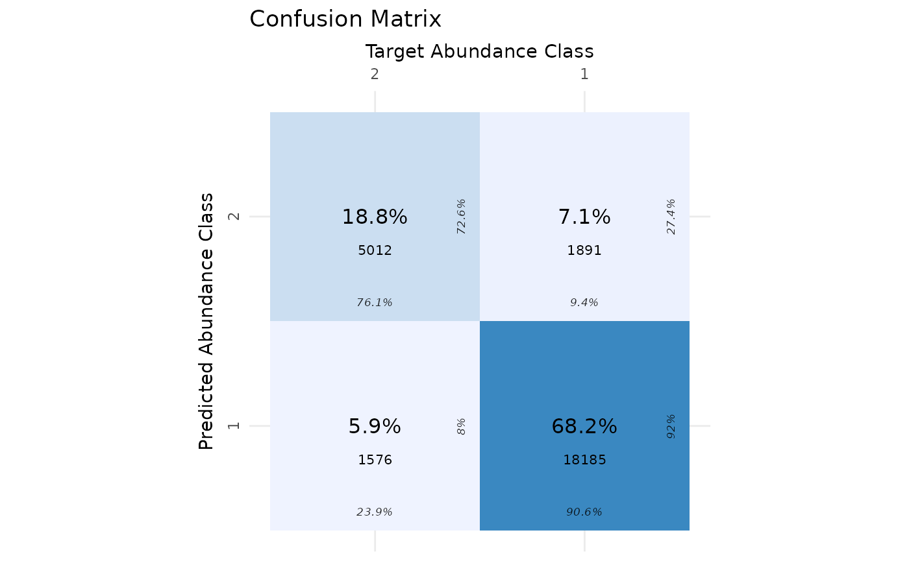

metabinR
Anestis Gkanogiannis
anestis@gkanogiannis.com Source:vignettes/metabinR_vignette.Rmd
metabinR_vignette.RmdAbout metabinR
metabinR performs abundance- and composition-based
binning on metagenomic samples directly from FASTA or FASTQ files.
Abundance-based binning (AB) analyzes long k-mers (k > 8);
composition-based binning (CB) analyzes short k-mers (k < 8);
hierarchical binning (ABxCB) chains the two.
The heavy lifting is implemented in Java and called via rJava. From v2.0.0
the R API returns an S4 MetabinResult object and accepts
Biostrings / ShortRead inputs in addition to file paths.
Installation
if (!requireNamespace("BiocManager", quietly = TRUE))
install.packages("BiocManager")
BiocManager::install("metabinR")A JDK (Java >= 17) must be available before installing
metabinR.
Preparation
JVM heap size
JVM flags are passed through the java.parameters option.
The -Xmx flag controls the maximum heap:
-Xmx1500M or -Xmx3G, etc. Set this
before loading the package.
options(java.parameters = "-Xmx1500M")
library(metabinR)
library(data.table)
library(dplyr)
library(ggplot2)
library(gridExtra)
library(cvms)
library(sabre)
library(Biostrings)To customise additional JVM flags (on top of the -Xmx
heap setting), set
options(metabinR.jvm.flags = c("-XX:+UseG1GC", ...)) before
the package is loaded. The defaults returned by
metabinR_jvm_options() already enable G1GC and string
deduplication.
The MetabinResult class
Each binning function returns a MetabinResult S4
object:
-
assignments(res)—DataFrameof per-read cluster assignments. -
nClusters(res)— number of clusters produced. -
parameters(res)— list of parameters actually used. -
algorithm(res)—"AB","CB", or"ABxCB". -
as.data.frame(res)— the v1.x tabular layout for back-compat.
Abundance based binning example
The toy simulated metagenome contains 26,664 Illumina reads (13,332 pairs of 2x150bp) sampled from 10 bacterial genomes across two abundance classes (high vs. low).
Abundance ground truth:
abundances <- read.table(
system.file("extdata", "distribution_0.txt", package = "metabinR"),
col.names = c("genome_id", "abundance", "AB_id"))Read-level ground truth:
reads.mapping <- fread(
system.file("extdata", "reads_mapping.tsv.gz", package = "metabinR")) %>%
merge(abundances[, c("genome_id", "AB_id")], by = "genome_id") %>%
arrange(anonymous_read_id)Run abundance-based binning with 10-mers into 2 clusters:
res.AB <- abundance_based_binning(
system.file("extdata", "reads.metagenome.fasta.gz", package = "metabinR"),
numOfClustersAB = 2,
kMerSizeAB = 10,
dryRun = FALSE,
outputAB = "vignette"
)
res.AB
#> MetabinResult (AB)
#> reads: 26,664
#> clusters: 2
#> inputs: 1 file(s)
#> - /home/runner/work/_temp/Library/metabinR/extdata/reads.metagenome.fasta.gzres.AB is a MetabinResult. Extract the
per-read table and pull the cluster labels out of it:
assignments.AB <- as.data.frame(res.AB) %>% arrange(read_id)abundance_based_binning() wrote one FASTA per cluster
and a k-mer count histogram:
histogram.AB <- read.table("vignette__AB.histogram.tsv", header = TRUE)
ggplot(histogram.AB, aes(x = counts, y = frequency)) +
geom_area() +
labs(title = "kmer counts histogram") +
theme_bw()
Evaluate against the abundance-class ground truth:
eval.AB.cvms <- cvms::evaluate(
data = data.frame(
prediction = as.character(assignments.AB$AB),
target = as.character(reads.mapping$AB_id),
stringsAsFactors = FALSE),
target_col = "target",
prediction_cols = "prediction",
type = "binomial"
)
eval.AB.sabre <- sabre::vmeasure(
as.character(assignments.AB$AB),
as.character(reads.mapping$AB_id))
p <- cvms::plot_confusion_matrix(eval.AB.cvms) +
labs(title = "Confusion Matrix",
x = "Target Abundance Class",
y = "Predicted Abundance Class")
tab <- as.data.frame(
c(
Accuracy = round(eval.AB.cvms$Accuracy, 4),
Specificity = round(eval.AB.cvms$Specificity, 4),
Sensitivity = round(eval.AB.cvms$Sensitivity, 4),
Fscore = round(eval.AB.cvms$F1, 4),
Kappa = round(eval.AB.cvms$Kappa, 4),
Vmeasure = round(eval.AB.sabre$v_measure, 4)
)
)
grid.arrange(p, ncol = 1)
knitr::kable(tab, caption = "AB binning evaluation", col.names = NULL)| Accuracy | 0.8700 |
| Specificity | 0.9058 |
| Sensitivity | 0.7608 |
| Fscore | 0.7430 |
| Kappa | 0.6560 |
| Vmeasure | 0.3553 |
Composition based binning example
Read-level ground truth (bacterial genome of origin):
reads.mapping <- fread(
system.file("extdata", "reads_mapping.tsv.gz", package = "metabinR")) %>%
arrange(anonymous_read_id)Run composition-based binning with 4-mers into 10 clusters:
res.CB <- composition_based_binning(
system.file("extdata", "reads.metagenome.fasta.gz", package = "metabinR"),
numOfClustersCB = 10,
kMerSizeCB = 4,
dryRun = TRUE,
outputCB = "vignette"
)
assignments.CB <- as.data.frame(res.CB) %>% arrange(read_id)As a pure clustering task, evaluate with extrinsic measures:
eval.CB.sabre <- sabre::vmeasure(
as.character(assignments.CB$CB),
as.character(reads.mapping$genome_id))
tab <- as.data.frame(
c(
Vmeasure = round(eval.CB.sabre$v_measure, 4),
Homogeneity = round(eval.CB.sabre$homogeneity, 4),
Completeness = round(eval.CB.sabre$completeness, 4)
)
)
knitr::kable(tab, caption = "CB binning evaluation", col.names = NULL)| Vmeasure | 0.2290 |
| Homogeneity | 0.1916 |
| Completeness | 0.2845 |
Hierarchical (2-step ABxCB) binning example
res.ABxCB <- hierarchical_binning(
system.file("extdata", "reads.metagenome.fasta.gz", package = "metabinR"),
numOfClustersAB = 2,
kMerSizeAB = 10,
kMerSizeCB = 4,
dryRun = TRUE,
outputC = "vignette"
)
assignments.ABxCB <- as.data.frame(res.ABxCB) %>% arrange(read_id)
eval.ABxCB.sabre <- sabre::vmeasure(
as.character(assignments.ABxCB$ABxCB),
as.character(reads.mapping$genome_id))
tab <- as.data.frame(
c(
Vmeasure = round(eval.ABxCB.sabre$v_measure, 4),
Homogeneity = round(eval.ABxCB.sabre$homogeneity, 4),
Completeness = round(eval.ABxCB.sabre$completeness, 4)
)
)
knitr::kable(tab, caption = "ABxCB binning evaluation", col.names = NULL)| Vmeasure | 0.2830 |
| Homogeneity | 0.4722 |
| Completeness | 0.2021 |
In-memory inputs (Biostrings / ShortRead)
Instead of a path, you can pass a DNAStringSet,
QualityScaledDNAStringSet, or ShortReadQ. The
Java backend reads from disk, so non-file inputs are staged to a
tempfile transparently.
reads <- Biostrings::readDNAStringSet(
system.file("extdata", "reads.metagenome.fasta.gz", package = "metabinR"))
res.AB.mem <- abundance_based_binning(
reads,
numOfClustersAB = 2,
kMerSizeAB = 10,
dryRun = TRUE
)
identical(nrow(assignments(res.AB.mem)), nrow(assignments(res.AB)))
#> [1] TRUEClean up files written by the AB run:
unlink("vignette__*")Session Info
utils::sessionInfo()
#> R version 4.6.0 (2026-04-24)
#> Platform: x86_64-pc-linux-gnu
#> Running under: Ubuntu 24.04.4 LTS
#>
#> Matrix products: default
#> BLAS: /usr/lib/x86_64-linux-gnu/openblas-pthread/libblas.so.3
#> LAPACK: /usr/lib/x86_64-linux-gnu/openblas-pthread/libopenblasp-r0.3.26.so; LAPACK version 3.12.0
#>
#> locale:
#> [1] LC_CTYPE=C.UTF-8 LC_NUMERIC=C
#> [3] LC_TIME=C.UTF-8 LC_COLLATE=C.UTF-8
#> [5] LC_MONETARY=C.UTF-8 LC_MESSAGES=C.UTF-8
#> [7] LC_PAPER=C.UTF-8 LC_NAME=C.UTF-8
#> [9] LC_ADDRESS=C.UTF-8 LC_TELEPHONE=C.UTF-8
#> [11] LC_MEASUREMENT=C.UTF-8 LC_IDENTIFICATION=C.UTF-8
#>
#> time zone: UTC
#> tzcode source: system (glibc)
#>
#> attached base packages:
#> [1] stats4 stats graphics grDevices utils datasets methods
#> [8] base
#>
#> other attached packages:
#> [1] Biostrings_2.79.5 Seqinfo_1.1.0 XVector_0.51.0
#> [4] IRanges_2.45.0 S4Vectors_0.49.2 BiocGenerics_0.57.1
#> [7] generics_0.1.4 sabre_0.4.3 cvms_2.0.0
#> [10] gridExtra_2.3 ggplot2_4.0.3 dplyr_1.2.1
#> [13] data.table_1.18.2.1 metabinR_1.99.0 BiocStyle_2.39.0
#>
#> loaded via a namespace (and not attached):
#> [1] tidyselect_1.2.1 farver_2.1.2
#> [3] R.utils_2.13.0 S7_0.2.2
#> [5] bitops_1.0-9 fastmap_1.2.0
#> [7] pROC_1.19.0.1 GenomicAlignments_1.47.0
#> [9] digest_0.6.39 lifecycle_1.0.5
#> [11] sf_1.1-0 pwalign_1.7.0
#> [13] terra_1.9-11 magrittr_2.0.5
#> [15] compiler_4.6.0 rlang_1.2.0
#> [17] sass_0.4.10 tools_4.6.0
#> [19] yaml_2.3.12 knitr_1.51
#> [21] labeling_0.4.3 S4Arrays_1.11.1
#> [23] classInt_0.4-11 interp_1.1-6
#> [25] sp_2.2-1 DelayedArray_0.37.1
#> [27] plyr_1.8.9 RColorBrewer_1.1-3
#> [29] KernSmooth_2.23-26 abind_1.4-8
#> [31] ShortRead_1.69.4 BiocParallel_1.45.0
#> [33] withr_3.0.2 purrr_1.2.2
#> [35] hwriter_1.3.2.1 R.oo_1.27.1
#> [37] desc_1.4.3 grid_4.6.0
#> [39] latticeExtra_0.6-31 e1071_1.7-17
#> [41] scales_1.4.0 SummarizedExperiment_1.41.1
#> [43] cli_3.6.6 rmarkdown_2.31
#> [45] crayon_1.5.3 ragg_1.5.2
#> [47] proxy_0.4-29 DBI_1.3.0
#> [49] cachem_1.1.0 parallel_4.6.0
#> [51] BiocManager_1.30.27 matrixStats_1.5.0
#> [53] vctrs_0.7.3 Matrix_1.7-5
#> [55] jsonlite_2.0.0 bookdown_0.46
#> [57] systemfonts_1.3.2 jpeg_0.1-11
#> [59] jquerylib_0.1.4 tidyr_1.3.2
#> [61] units_1.0-1 glue_1.8.1
#> [63] pkgdown_2.2.0 codetools_0.2-20
#> [65] rJava_1.0-18 gtable_0.3.6
#> [67] deldir_2.0-4 raster_3.6-32
#> [69] GenomicRanges_1.63.2 tibble_3.3.1
#> [71] pillar_1.11.1 htmltools_0.5.9
#> [73] entropy_1.3.2 R6_2.6.1
#> [75] textshaping_1.0.5 evaluate_1.0.5
#> [77] lattice_0.22-9 Biobase_2.71.0
#> [79] R.methodsS3_1.8.2 png_0.1-9
#> [81] backports_1.5.1 Rsamtools_2.27.2
#> [83] cigarillo_1.1.0 bslib_0.10.0
#> [85] class_7.3-23 Rcpp_1.1.1-1
#> [87] SparseArray_1.11.13 checkmate_2.3.4
#> [89] xfun_0.57 fs_2.1.0
#> [91] MatrixGenerics_1.23.0 pkgconfig_2.0.3